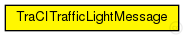

This documentation is released under the Creative Commons license
This documentation is released under the Creative Commons licenseNOTE: Currently only supports changes of the IDs (due to variation in field types)
The following diagram shows usage relationships between types. Unresolved types are missing from the diagram. Click here to see the full picture.
| Name | Type | Description |
|---|---|---|
| tlId | string |
traffic light id |
| changedAttribute | int |
what field/attrbute of the traffic light changed? |
| oldValue | string |
value before the change |
| newValue | string |
value that is to be set / was newly set |
| changeSource | int |
where did the change originate |
This documentation is released under the Creative Commons license